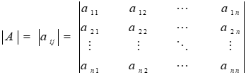

Preface
Contributors
Editors
Feedback
Publication Policy
Section Index
1
General Information
1.1
Unit Conversions
1.2
Greek Alphabet
1.3
Greek Symbols Used for Aircraft
1.4
Common Subscripts
1.5
Common Abbreviations (raw)
1.6
Sign Conventions (raw)
1.7
Thermodynamics Relations
1.7.1
Thermodynamic Definitions
1.7.2
Thermodynamic Symbols
1.7.3
Thermodynamic Laws
1.8
Mechanics Relations
1.8.1
Mechanics Symbols
1.8.2
Newton’s Laws
1.8.3
Planar Kinetics, Work, Power and Energy
1.8.4
Planar Kinematics at Constant Acceleration
1.8.5
Curvilinear motion with constant acceleration and radius
1.8.6
Aircraft in level turn
1.8.7
Level Turn Kinematics Character
1.8.8
Gyroscopic Motion
1.9
International Phonetic Alphabet and Morse Code
1.10
Section 1 References
2
Section 2 Mathematics
3
Cofactors and Determinates
4

Flight Test Engineering Reference Handbook
3
Cofactors and Determinates